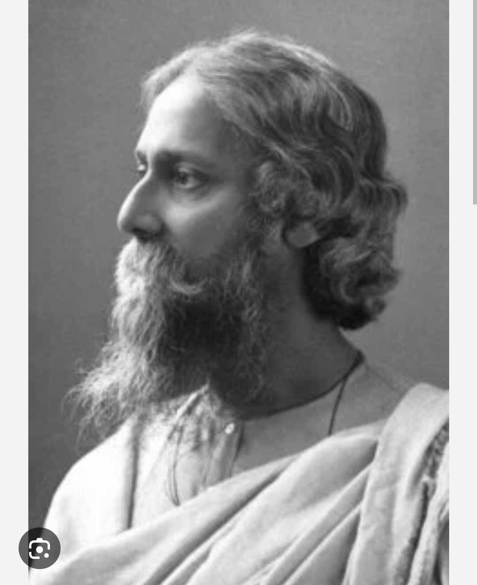
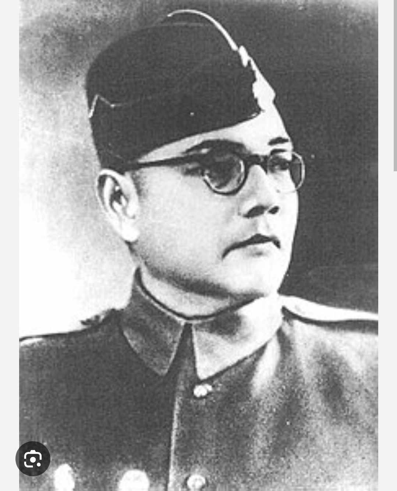
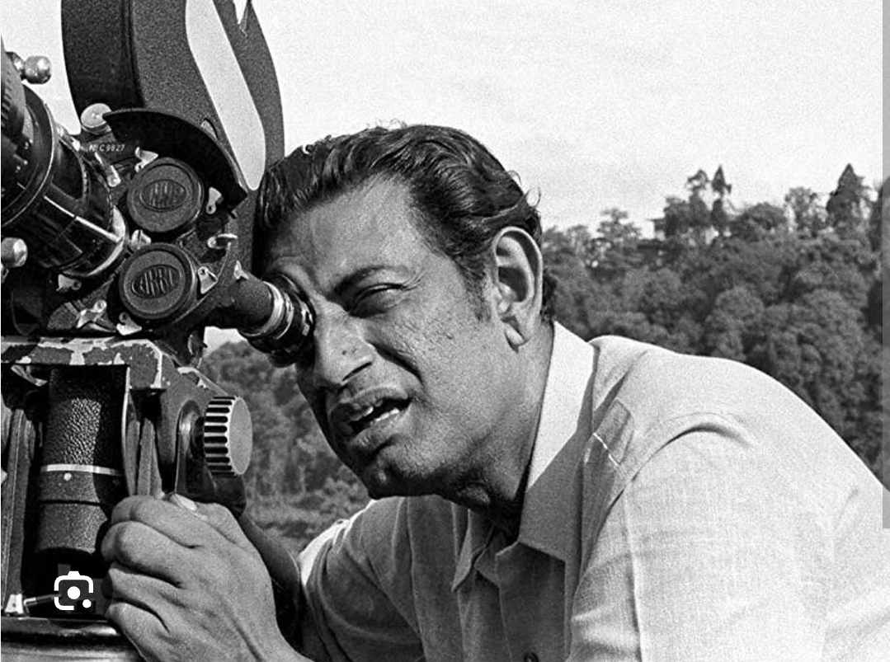
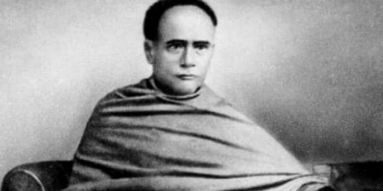

Rabindranath Tagore
Rabindranath Tagore (1861–1941) was a Bengali poet, writer, composer, philosopher, and painter. He was
the first non-European to win the Nobel Prize in Literature in 1913 for his collection of poems,
Gitanjali. Tagore reshaped Bengali literature and music, as well as Indian art, with his
modernist approach.

Subhas Chandra Bose
Subhas Chandra Bose (1897–1945) was a nationalist leader and a prominent figure in India's struggle for
independence. He founded the Indian National Army (INA) and sought international support to free India
from British rule. His famous slogan, "Give me blood, and I will give you freedom!" continues to inspire
generations.

Satyajit Ray
Satyajit Ray (1921–1992) was an acclaimed filmmaker, screenwriter, and author, best known for his Apu
Trilogy. He revolutionized Indian cinema and won numerous international awards, including an
Academy Honorary Award. His storytelling and cinematic vision left a lasting impact on world cinema.

Ishwar Chandra Vidyasagar
Ishwar Chandra Vidyasagar (1820–1891) was a social reformer, educator, and writer. He played a crucial
role in the introduction of widow remarriage and the modernization of Bengali education. His
contributions to women's rights and education remain highly influential.